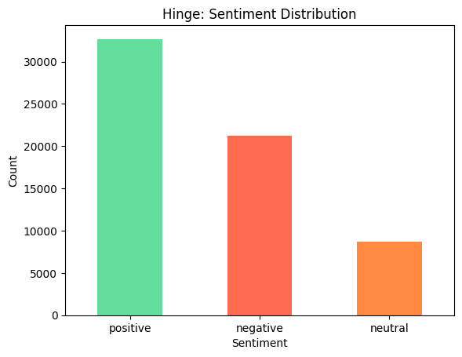
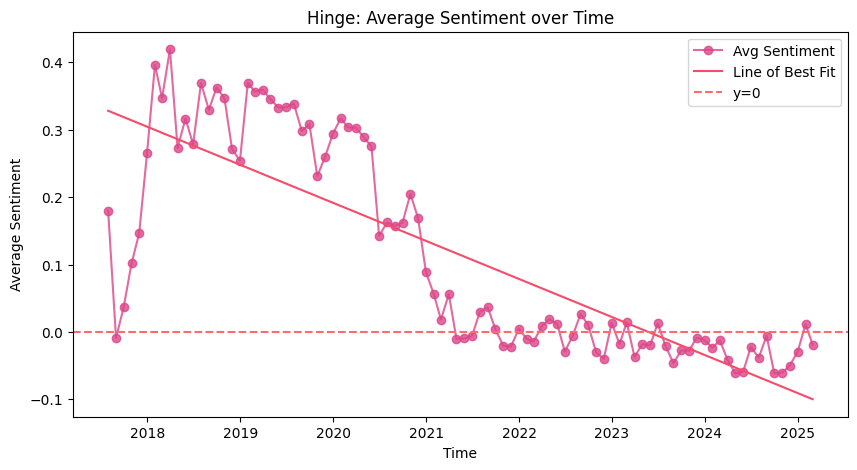
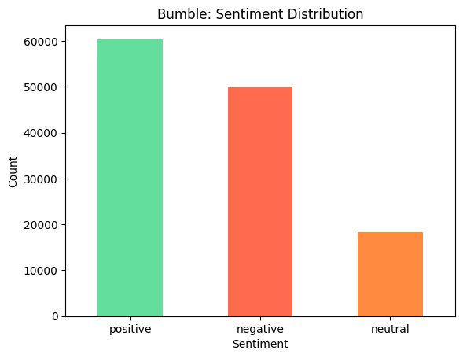
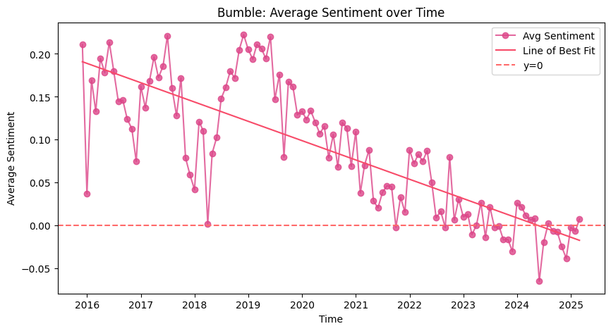
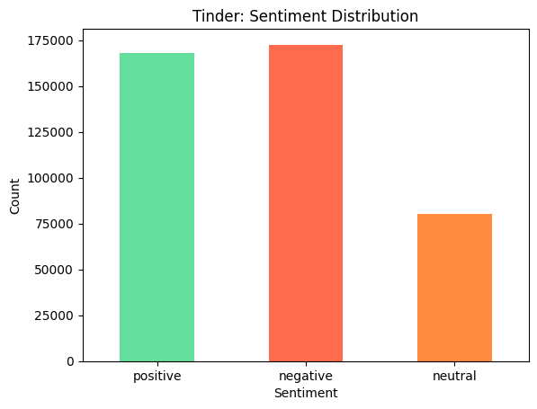
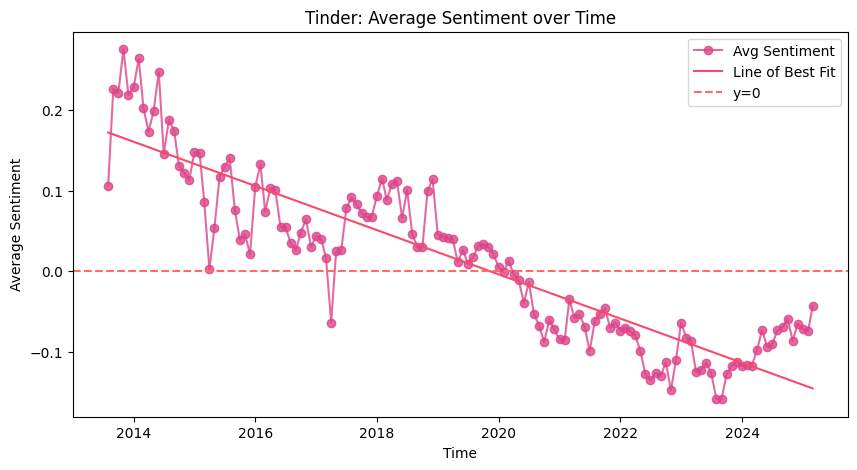

DataRizz: A Statistical Deep Dive into Dating Apps
Dating apps have grown in popularity and changed how people meet, interact, and form relationships. Millions of people use these platforms every day to swipe, like, match, and message potential partners. The resulting data allows us to examine user demographics and identify patterns in engagement and reported success.
Through these data visualisations, we examine relationships between user demographics, overall opinions of dating apps, and the profile characteristics associated with engagement. The findings provide a clearer view of how people use dating apps and what shapes their experiences.
Sentiment Analysis of User Reviews
In this section, we perform sentiment analysis on Google Play reviews of three popular dating apps. The datasets are obtained from Kaggle at the following links:
Hinge: https://www.kaggle.com/datasets/shivkumarganesh/hinge-google-play-store-review
Bumble: https://www.kaggle.com/datasets/shivkumarganesh/bumble-dating-app-google-play-store-review
Tinder:https://www.kaggle.com/datasets/shivkumarganesh/tinder-google-play-store-review
We use VADER (Valence Aware Dictionary and sEntiment Reasoner), which produces a compound sentiment score. Each score is categorised as positive (above 0.05), negative (below -0.05), or neutral (between -0.05 and 0.05).
Positive words such as "love", "great", and "amazing" contribute to a higher sentiment score, while negative words such as "terrible", "disappointing", and "scam" lower it. VADER is particularly effective for social media and other short texts because it considers punctuation, capitalisation, and negation.
The sentiment-distribution bar charts and time-series plots show how user opinions evolved over the period analysed.
Hinge


Bumble


Tinder


The plots suggest a general decline in sentiment across all three apps during the period analysed. One notable dip coincides with the COVID-19 pandemic and may reflect frustration among people who turned to dating apps during lockdowns. New users who were unfamiliar with online dating may also have struggled with virtual interactions or brought different expectations to the platforms.
Sentiment may also have declined in response to changing app features, monetisation strategies, and recommendation algorithms. Subscription costs, ghosting, and perceived inauthenticity in profiles could likewise have contributed to negative reviews.
To examine user experience more closely, the word clouds below show the terms most frequently mentioned in Tinder, Bumble, and Hinge reviews. They highlight common points of praise and frustration: words with positive sentiment appear in pink, while words with negative sentiment appear in orange.


Across Tinder, Hinge, and Bumble, frequent words include "fake", "scam", "waste", "likes", "free", "issue", and "worst". This suggests widespread frustration with bots and fake profiles. The appearance of "free" alongside terms such as "waste" and "scam" also points to dissatisfaction with monetisation strategies, particularly when users feel pressured to pay to see likes or access other features.
Technical issues appear to be a major source of frustration for Tinder users, with words such as "crashes", "error", "bugs", "slow", and "issues" appearing more often than in reviews of the other two apps. Despite those complaints, terms such as "fun", "cool", and "awesome" suggest that many users still enjoy the experience.
Hinge reviews uniquely feature "support", "decent", and "recommend", suggesting that some users recognise the app’s customer support despite experiencing technical problems. Words such as "friendly" and "attractive" also appear more frequently, which may indicate more positive perceptions of match quality and interaction.
Bumble reviews focus more heavily on pricing and value, with words such as "boost", "refund", "expensive", "worth", and "pay". This suggests that users question the value of premium features. Terms such as "inactive", "wasting", and "unable" also point to frustration with low response rates.
Overall, fake profiles, technical problems, and pricing concerns appear across all three apps, but the emphasis differs by platform. Tinder reviews focus more on technical reliability, Bumble reviews more often question pricing and inactive users, and Hinge reviews contain more language associated with positive interactions and perceived match quality.
Most Common Profile on Dating Apps
Dating-app use has become increasingly common, but who uses these platforms and what are they looking for? The following visualisation breaks down the demographics of female users by age, relationship goal, and occupation. The top three occupations in each branch are shown, while the remainder are grouped under “Other” for readability.

Among female profiles, the median age is 27 and the average height is 5’5”. The most common interests are travel, music, and sports, and most users report wanting children. High school is the most commonly reported education level, while artist is the most common occupation. The next graph presents the same demographic breakdown for male users.

Among male profiles, the median age is 28 and the median height is 5’6”. Entrepreneur is the most common occupation, while travel, hiking, and reading are the most common interests. Long-term relationships are the most frequently reported goal, and most users report that they do not want children. The median education level is a bachelor’s degree.
Overall, the typical ages of male and female users are similar. One notable difference is that more men report seeking long-term relationships, while women more often report seeking something casual. These differing goals may help explain why some users struggle to find compatible matches. The age distribution of women aged 18–35 is relatively even, while male profiles include a smaller share of users aged 18–20 and larger shares aged 21–25 and 31–35. The next section examines whether demographic factors such as age and education are associated with app-usage frequency.
Demographics and Online Dating Trends
The practical questions are straightforward: What makes an effective bio, and which profile characteristics are associated with more engagement? Before considering profile strategies, we first examine users’ demographics—age, gender, height, and education—and their app-usage patterns, including relationship goals, usage frequency, and swipe volume.
To make these patterns more concrete, we introduce two fictional users, Alex and Beth. Neither character represents an individual in the dataset; both are illustrative scenarios created with user privacy in mind.
Alex is a 22-year-old electrical engineer who recently graduated and now works at a small biotech firm. He uses a dating app only a few times each month but has already arranged a couple of dates, including a weekend jet-skiing trip with a recent match. At 6’1”, he is also taller than many of his peers.
According to the data, Alex reflects several broader patterns:
Alex entered the workforce immediately after college and only recently began using the app.
At 22, he does not feel an urgent need to find a long-term relationship and uses dating apps only a few times each month.
Alex is outdoors-oriented and primarily seeks a friend or companion who enjoys activities such as jet-skiing and hiking.
He is confident in his profile and does not feel the need to use the app constantly. When he does use it, however, he readily swipes right on profiles he finds attractive.
Beth is a 26-year-old PhD student working in a brain-imaging lab. During a late lunch in the cafeteria, she opens the dating app and begins swiping. She has used the app daily for a year and a half while looking for a long-term partner, prompting a lab colleague to joke about her “side project”.
Beth also reflects several patterns in the data:
As a PhD student, Beth uses the app to meet people beyond her relatively small research environment.
Beth is 26 years old. She feels the pressure to find a long-term relationship.
Beth is more indoors-oriented and is seeking a serious relationship rather than an activity partner.
Across these scenarios, the analysis highlights several relationships between demographics and dating-app usage.
Education Level vs. Age at First Use: PhD students begin using dating apps earlier than users with a bachelor’s degree.

Age Group vs. Relationship Goal and Swipe Volume: Users aged 18–22 tend to seek casual friendships, while those over 30 more often seek long-term commitments. Users aged 23–30 report a mixture of both goals and record the most swipes.


Outdoor Orientation vs. Relationship Goal: Outdoors-oriented users more often seek friendships, while indoors-oriented users tend to seek either casual or more serious relationships.

Men: Height vs. Swipe Volume and Usage Frequency: Shorter men record fewer swipes than taller men but use the app more frequently—daily rather than monthly. No comparable relationship appears among women.


In summary: outdoor-oriented users are more likely to seek friendships, users in their twenties are the most active, and users over 30 are more likely to look for long-term relationships. PhD users begin using dating apps earlier than other education groups, while shorter male users tend to use the apps more frequently but swipe less often.
What Kinds of People Get the Most Engagement on Their Dating Profiles?
Now that we’ve seen how Alex and Beth represent different dating app users—one swiping occasionally for adventure partners, the other searching daily for a long-term relationship—you might be wondering: Who actually gets the most attention on these apps?
While personality, preferences, and usage habits all play a role, certain profile traits are consistently associated with more engagement. Understanding these factors can help users interpret and optimise their profiles.
Meet Kevin and Sophie: Two Users with Different Engagement Levels
Kevin and Sophie are two additional fictional users who illustrate the engagement patterns identified in the data.
Kevin, 22 | Outdoor, Chat-Focused, Casual Swiper
Kevin, much like Alex, is 22 years old, enjoys outdoor activities, and uses dating apps casually. He swipes occasionally, lives in a large city, lists “chatting” and “friendships” as his interests, has a verified profile, and has uploaded six high-quality photos of his adventures. He also speaks English, Spanish, and French. Kevin’s profile receives high engagement.
Sophie, 27 | Indoor, Searching for Long-Term Commitment
Sophie, like Beth, is more serious about dating. She is 27, a PhD student, and looking for a long-term partner. She lists her interest as “dating”, believing that clarity will help her find the right match. She lives in a small city, speaks only English, does not have VIP or verified status, and has one picture on her profile. Sophie’s engagement is lower than Kevin’s.
Six Factors Affecting Engagement on Dating Apps
1. Age & Engagement

Users in their early twenties receive the highest engagement in this dataset, with profile visits and “kisses” generally peaking around age 22. Engagement declines at older ages, so Kevin’s profile would be expected to receive more visits and kisses than Sophie’s. After age 25, the difference becomes more pronounced.
2. Interest Type

Users who list friendship as their primary interest receive the most engagement, while those who select chatting also receive relatively high engagement. Profiles that list dating receive the fewest interactions. This suggests that users may be more willing to approach profiles that feel low-pressure and open-ended. Kevin, who selected “Chat” and “Friends”, therefore receives more swipes than Sophie, who selected “Dating”.
3. VIP & Verification

Many dating apps also offer VIP services. Our analysis suggests that users who have both VIP and verified status (Yes, Yes) receive the highest engagement, while users with neither VIP nor verified status (No, No) have the lowest engagement. Interestingly, users with only verification (No, Yes) receive more engagement than users with only VIP status (Yes, No).
This suggests that verification has a stronger association with engagement than VIP status alone, possibly because users place more trust in verified accounts.
VIP status can increase profile visibility, while verification can build trust by signalling that an account is authentic. In this dataset, profiles with both attributes receive the highest engagement.
Kevin’s verified status may therefore contribute to his receiving more profile visits than Sophie, who has neither VIP nor verified status.
4. Profile Pictures

The graph shows a positive correlation between the number of profile pictures and engagement. As the number of pictures increases, both profile visits and kisses tend to rise. Users with no pictures, or very few, receive substantially less engagement. The trend begins to flatten at around six to eight pictures. Kevin, who has six high-quality pictures, therefore receives more profile visits than Sophie, who uploaded only one.
5. Distance

Profile visits and kisses are concentrated at shorter distances, likely because nearby users can meet more easily in person. Engagement is highest within 100 kilometres and declines substantially beyond that range, as reflected by the downward-sloping regression line. Kevin’s location in a major city may therefore expose his profile to more nearby users than Sophie’s location in a smaller town.
6. Languages Spoken

The regression line shows a positive correlation between the number of languages listed and engagement. Engagement is highest among users who list three to five languages, although the apparent benefit may plateau beyond six. Many users list only one language, but bilingual and multilingual profiles tend to receive more engagement. Kevin, who lists English, Spanish, and French, therefore receives more interaction than Sophie, who lists only English.
Final Insights: How to Build the Most Engaging Profile
From Kevin and Sophie’s experiences, here’s what we learned about who gets the most engagement:
Young users (early 20s) get the most attention.
Profiles listing “Friendship” or “Chat” as an interest receive the highest engagement.
Combining VIP and verified status is associated with substantially higher engagement.
More profile pictures are associated with more profile visits and swipes.
Geographic proximity is associated with higher engagement.
Listing multiple languages is associated with more interactions.
Across the factors analysed, profile visits are the dominant engagement metric. This suggests that users often view profiles without taking further action.
What Does This Mean for You?
Users who take a casual approach and focus on friendship may receive stronger engagement, as illustrated by Alex’s profile.
Users seeking a long-term commitment may receive lower engagement, as illustrated by Beth’s profile, but profile quality and clarity still matter.
If height is a concern, profile quality and engagement strategy still matter more than a single demographic trait.
These factors provide a useful starting point for understanding and improving profile engagement.
Conclusion
Dating apps are a relatively new way to meet people and form relationships. This analysis identifies patterns in user demographics, profile characteristics, engagement, and satisfaction, providing greater insight into how people use these platforms. Combined with the findings from review sentiment, these results could help developers improve the overall user experience.
As new platforms emerge and established apps evolve, deeper analysis of dating-app data will remain important to understanding relationships in an increasingly digital world.